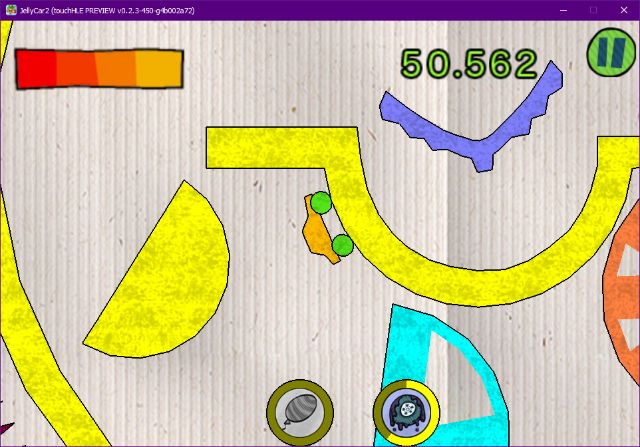

| App name | JellyCar 2 |
|---|---|
| Release year | 2009 |
| Developer/Publisher | Walaber |
| First reported | |
| First reported by | @YellowPerson24 |
| Version number | Display name | Bundle identifier | Minimum iOS version | Best rating | Last updated | First reported by | |
|---|---|---|---|---|---|---|---|
| 1.0.0 | JellyCar2 | com.disney.jellyCar2 | 2.1 | ⭐️⭐️⭐️ | @InvertDark | ||
| 1.2.2 | JellyCar 2 | com.disney.jellyCar2 | 3.0 | ⭐️ | @YellowPerson24 |
| Version number | touchHLE version | Operating system | GPU | Scale hack supported? | Rating | Reported | Reported by | Remarks | Screenshot |
|---|---|---|---|---|---|---|---|---|---|
| 1.0.0 | v0.2.3-450-g4b002a72 | Windows 10 v22H2 | Intel(R) UHD Graphics | Yes | ⭐️⭐️⭐️ | @InvertDark | Intro logos are skipped. The help menu (automatically opens on first boot) is very broken and can't be closed. Music doesn't loop. Pausing/failing/finishing levels crashes the game (Best time/score is saved before crash). Some menu buttons crash the game. | View | |
| 1.2.2 | 0.2.2-559-gd7e3c9a | Windows 10 | Intel(R) HD Graphics 5500 | Couldn't test | ⭐️ | @YellowPerson24 | Game crash less than a second. |
| Rating | Description |
|---|---|
| ⭐️ | Completely broken: app crashes immediately without any user interaction. |
| ⭐️⭐️ | Only (part of) the main menu, intro or similar is working. |
| ⭐️⭐️⭐️ | Some of the main content of the app works, but with major issues. |
| ⭐️⭐️⭐️⭐️ | The main content of the app works (e.g. entire game is playable) with only small issues. |
| ⭐️⭐️⭐️⭐️⭐️ | Everything works. The app is fully usable. |
